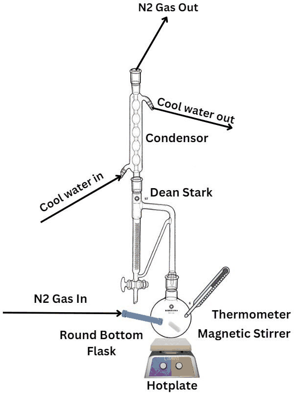

Low-carbon fuel pathways
What makes a sustainable aviation fuel project bankable — from feedstock availability and conversion technology through to distribution and investment viability.
Prospective PhD candidate · Process & software engineering
Chemical engineer working where lab-scale chemistry, process design and software systems meet.
Two engineering degrees from Institut Teknologi Bandung, a peer-reviewed article on glycerol valorisation in the ASEAN Journal of Chemical Engineering, and five years across plant, laboratory and code: sustainable aviation fuel studies, battery-grade precursor development, and Python-based ERP systems. I am now seeking a doctoral position where process fundamentals and research practice meet.
Adding DMSO to a KOH–glycerol mixture creates a superbasic medium that polymerises glycerol to polyglycerol at 140–150 °C within two hours — conditions at which KOH alone yields nothing over eight hours at the same temperature, and roughly a third of the heating time of the conventional 260–280 °C route.

01 / Profile
A short account of how a chemical engineering training became a practice spanning energy research and enterprise software.
I trained as a chemical engineer at Institut Teknologi Bandung: first in Bioenergy and Chemurgy Engineering, then in Chemical Engineering at master's level. I chose Bioenergy and Chemical Engineering because I find the field genuinely exciting. I enjoy learning how chemistry and engineering come together to solve practical problems, especially when an idea that started in the laboratory eventually becomes a process that works at a larger scale.
My undergraduate research on glycerol polymerisation became my first peer-reviewed article, in the ASEAN Journal of Chemical Engineering (2024): a study of how far a change in the catalytic medium can substitute for heat. That question — severity traded for chemistry rather than for energy — is the kind of problem I want to keep working on.
My professional work has kept returning to that same triangle. At PT QMB New Energy Material in Morowali I supported the synthesis of ternary precursors for battery materials, carried out quality control against operating procedures, and produced the workshop's engineering drawings and layouts. On freelance studies through PT LAPI ITB I assessed feedstock supply chains, conversion technologies and financial viability for sustainable aviation fuel — projects delivered for PT Tekalumni Konsultan and PT Pertamina.
Today I develop and maintain Odoo ERP modules in Python and XML for accounting, finance and procurement workflows at PT Thinq Teknologi Milik Bersama. The common thread across all of it is a preference for problems that need both a mass balance and a data model — which is the space I want to occupy as a doctoral researcher: low-carbon fuel and material pathways, assessed rigorously, and supported by tooling that makes the assessment reproducible and useful to operators.
At a glance
Working competencies
02 / Research focus
Each of these grows out of work I have actually done; the prospective directions are set out in full on the research page.
What makes a sustainable aviation fuel project bankable — from feedstock availability and conversion technology through to distribution and investment viability.
Ternary precursor synthesis, process quality control, and the documentation that makes a pilot workshop reproducible at scale.
Superbasic catalytic media for condensation polymerisation — the subject of my 2024 article — and whether solvent engineering can substitute for temperature at industrial scale.
Encoding engineering and business rules into software that operations actually run on — Odoo, Python, PostgreSQL, and the data models underneath them.
03 / Selected work
Four of the engagements that best represent the range of the work. Full detail, including technologies and contributions, is in the portfolio.
Python business logic, XML views, access controls and SQL for cash-flow reporting, vendor selection, and RFQ/PO approval workflows.
2024—25 Ternary precursor process developmentSupervision of daily precursor synthesis operations, quality control, and engineering drawings and layouts for the battery materials workshop.
2024 Pre-feasibility of a sustainable aviation fuel refineryFeedstock supply chain and availability, production technology screening, product distribution, and economic viability for a proposed SAF refinery in Indonesia.
2023—24 Vegetable oil processing plant for SAF feedstockTechnology options, conversion efficiency, byproduct utilisation, market comparison against crude palm oil, and regulatory review for PT Pertamina.
I am looking for a PhD position in chemical engineering, process systems engineering or energy engineering — particularly on low-carbon fuels, battery materials, or the digitalisation of process industries. I would be glad to hear from supervisors working in these areas.